The experiment
What does a model keep in its memory?
We inspect a pretrained model’s memory to locate large values, track its structure, and test static quantization.
Motivated by LeapQuant, this is a small observational study: one document, three layers, and two heads. No training or reproduction of the LeapQuant method.
Large values concentrate in specific channels, while a few singular components capture most of the state energy. The direction of concentration changes across layers.
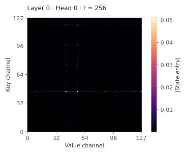
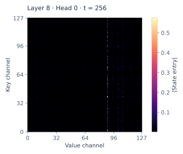

Actual states at t = 256 · Head 0 · Each heatmap uses its own color range. Click any chart to open it at full size.
Experimental setup
| Model | Qwen3.5-0.8B, pretrained |
|---|---|
| Hardware | NVIDIA Tesla T4 |
| Precision | FP16 weights · FP32 recurrent states |
| Input | One document · 256 tokens |
| Layers / heads | Layers 0, 8, 16 · Heads 0, 1 |
| Recorded state | 128 × 128 values after every token |
| Total snapshots | 256 × 3 × 2 = 1,536 matrices |
A matrix, not a list of tokens
Rows are key channels; columns are value channels. Each head maintains its own matrix. Tokens update this matrix rather than becoming new rows in it.
Layer and head IDs start at 0. St is the state immediately after processing token t.
Updated run: FP16 weights, FP32 state. All numbers come from the new results. Spectral plots use four checkpoints; the 3D explorer includes all 256 tokens.
Experiment 1 · State structure
Where do the large values live?
Channel RMS locates the large values. Singular energy reveals how many directions capture them.
A dominant key direction
A bright row near key channel 45 aligns with a peak in row RMS. The leading singular component alone retains 99.73% of the energy; rank 1 already exceeds 90%.
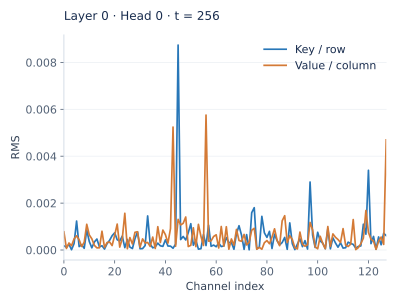
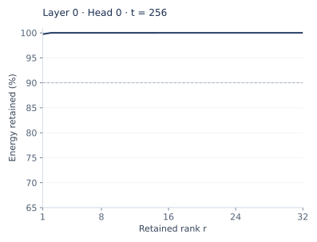
A localized value direction
The prominent column near value channel 89 coincides with a large column-RMS peak. The first component retains 86.18% of energy, and the first eight retain 99.42%. The 90% energy rank is 2.
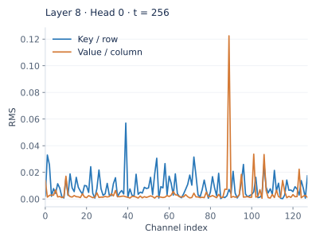

More directions, still a compact spectrum
Value channel 73 stands out, while the rest of the matrix contains a broader range of patterns. The leading component retains 74.32%; rank 5 reaches 90%, and the first eight retain 95.00%.
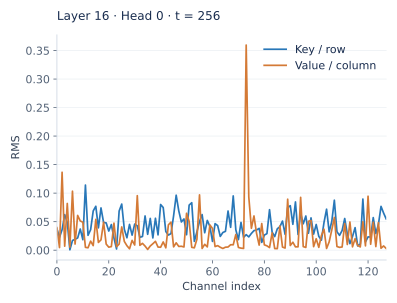

Compare final-state metrics
| Layer | Prominent direction | Top-1 energy | Top-8 energy | 90% energy rank |
|---|---|---|---|---|
| 0 | Key channel 45 | 99.73% | 100.00% | 1 |
| 8 | Value channel 89 | 86.18% | 99.42% | 2 |
| 16 | Value channel 73 | 74.32% | 95.00% | 5 |
How to read these measurements
RMS for row i is √(meanj Sij²); column RMS averages over rows instead. The heatmap displays |Sij|. An uncentered SVD gives S = UΣVᵀ, with cumulative energy
This is energy in the original matrix, not a variance ratio from centered covariance. A small energy rank means a good low-rank approximation; it does not establish exact algebraic rank or the cause of outliers.
Experiment 2 · Interactive state trajectory
Watch the memory change, token by token.
Drag the time slider for an immediate update. Press Play to follow all 256 observed states forward.
Loading selected state data…
Read the surface. X = value channel, Y = key channel. Z and color ranges stay fixed over time. Use the global scale to compare layers and heads.
Real frames, forward only. Each pair loads on demand (~16 MiB). The slider updates while dragging; Play stops at token 256. Play at the end restarts from token 1. The faster grid changes display only.
Experiment 2 · Reading the trajectory
Concentration is not a one-way process.
Head 0 at t = 64, 128, 192, 256. Lines connect measured checkpoints; intermediate spectral values are not inferred.
Does the state become more low-rank?
Top-8 singular energy stays close to 100% in Layer 0, but falls from about 98.6% to 95.0% in Layer 16. As tokens accumulate, the deeper state distributes energy across more components.
Repeated rank-one writes do not imply increasing spectral concentration.
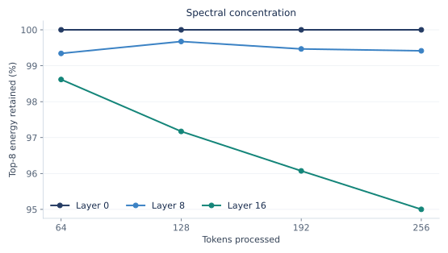
Do outliers keep growing?
The ratio max |S| / RMS(S) separates relative concentration from the overall scale of a matrix. It rises and falls across the checkpoints rather than growing monotonically.
Some updates may strengthen a concentrated pattern; others may weaken it.
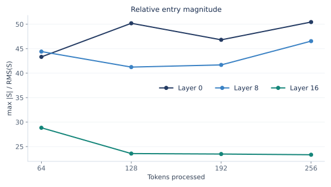
Singular-vector localization: key and value directions
Which direction is localized?
The inverse participation ratio (IPR) measures how strongly a unit singular vector concentrates on a few coordinates. IPR is 1 for a single occupied coordinate, and 1/128 ≈ 0.0078 for equal magnitudes across all channels.
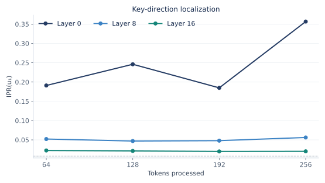
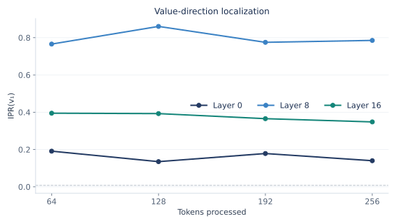
Individual singular vectors can be unstable when singular values are nearly tied. Interpret IPR alongside the spectral gap and row/column energy profiles.
Experiment 3 · Static quantization
Does a separate scale per channel help?
We quantize each saved matrix outside the model, reconstruct it, and measure relative Frobenius error. Tensor-wise quantization shares one min/scale pair across the matrix; row-wise and column-wise quantization use one pair per key or value channel.
Lower is better. Quantized values are not fed back into the next recurrent update.
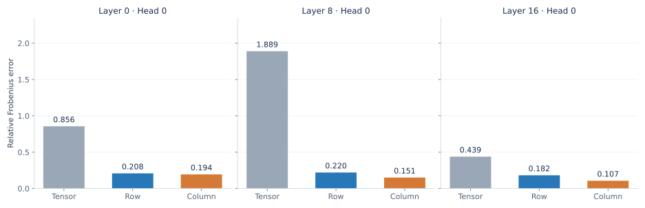
View exact 4-bit values
| Layer | Tensor-wise | Row-wise | Column-wise |
|---|---|---|---|
| 0 | 0.856 | 0.208 | 0.194 |
| 8 | 1.889 | 0.220 | 0.151 |
| 16 | 0.439 | 0.182 | 0.107 |
Column-wise quantization has the lowest error in these three Head-0 states, consistent with the prominent value-channel structure in Layers 8 and 16.
These are static reconstruction errors, not model-quality results. Channel-wise methods use more scale metadata; the original quantizer can also distort values near zero.
Why the quantization grid matters
For Layer 8, a separate diagnostic with an integer zero point reduces tensor-wise error from 1.889 to 0.345. That does not replace the original comparison, but shows why the large error cannot be attributed entirely to outliers.
Row/column schemes store 128 FP32 min/scale pairs instead of one: approximately 4.50 versus 4.004 bits per entry at 4-bit payload. The experiment does not measure equal-memory efficiency or recurrent error accumulation.
See the 8-bit comparison
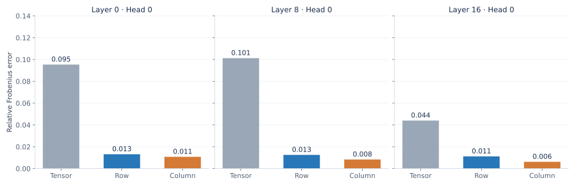
Putting the results together
From low-rank energy to channel outliers.
The useful connection is not just that large values and low-rank structure coexist. Singular vectors tell us where the energy in a large singular component is placed.
A column has high energy when large singular values align with large coordinates of their right singular vectors. The analogous row identity uses the left singular vectors.
This explains the structure of a state, not why training or recurrent updates produced it.
What we can—and cannot—conclude
| Research question | What this experiment shows |
|---|---|
| Are large values concentrated? | Yes, in specific rows or columns of the selected states. |
| Is the spectrum concentrated? | The first eight components retain at least 95% of final-state energy in the three Head-0 examples. |
| Do outliers grow monotonically? | No monotonic increase is observed in max/RMS across the four diagnostic checkpoints. |
| Does channel-wise quantization help? | It reduces static reconstruction error here, with a higher metadata budget. |
| What causes the concentration? | Unresolved. The current measurements do not identify a causal mechanism. |
The next question
Which updates reinforce a dominant direction—and which disperse it?
Track keys, values, gates, and write corrections; measure alignment with singular directions. Then repeat across independent documents and evaluate quantization with recurrent feedback and model-quality metrics.
There is a concrete structural phenomenon worth explaining in a real pretrained model. Its formation mechanism remains an open question.
Data & reproducibility
Inspect the evidence.
Explore the full data, rerun the notebook, or inspect the numerical checks. The supplied replay and prefix validation checks passed.
Run details, performance & validation
The page uses the supplied 256-token run with FP16 weights and native FP32 state. Collection took 15.73 s on a Tesla T4; peak allocated GPU memory was 1.624 GiB. The trajectory occupies 96 MiB uncompressed. Timing includes probing and CPU copies, so it is not a standard inference-throughput benchmark.
The supplied validation report marks independent one-token replay, fresh-prefix comparisons, and segmented-prefix comparisons as passed. Replay covers the first 32 tokens; prefix checks cover 1, 8, 32, and 256. These are numerical consistency checks with stated tolerances, not proof of model accuracy.
Model implementation & references
- Qwen3.5-0.8B model · revision
2fc06364715b967f1860aea9cf38778875588b17 - Transformers 5.24.0 · Qwen3.5 implementation
- Transformers 5.24.0 · cache implementation
- LeapQuant · research motivation and visual-style reference
All displayed experimental figures are regenerated from the supplied run. The 3D browser data are lossless little-endian FP32 copies, split by layer/head for on-demand loading. The web page is an original implementation.